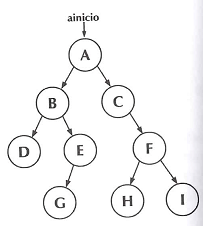
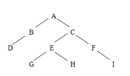
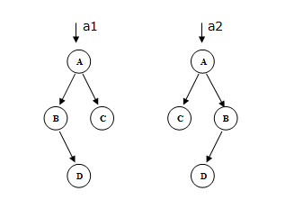

Árvores binárias são árvores em que todos os nós têm grau menor ou igual a dois. Desse modo, cada nó pode ter no máximo dois filhos, que são identificados como filho à esquerda e filho à direita.
Dada uma árvore binária, é possível estabelecer várias formas para percorrer todos os seus nós, sem repetir nenhum e sem deixar de passar por nenhum. Esta operação é denominada caminhamento, que é usada, por exemplo, para consultar ou alterar as informações contidas nos nós.
As três maneiras mais usuais para percorrer os nós são:
- caminhamento pré-fixado:
- caminhamento in-fixado:
- caminhamento pós-fixado:
Tomando como exemplo a árvore abaixo, temos, para cada tipo de caminhamento, a correspondente seqüência de nós:

caminhamento pré-fixado: A B D E G C F H I
caminhamento in-fixado; D B G E A C H F I
caminhamento pós-fixado: D G E B H I F C A
Na implementação das árvores binárias, utilizaremos para cada nó um registro contendo um campo para dados (dado), um ponteiro que aponta a sub-árvore da esquerda (esq) e um ponteiro que aponta a sub-árvore da direita (dir). O acesso à árvore é feito através de um ponteiro que aponta para a raiz (ainicio).
typedef struct nodo {Pela própria definição, pode-se perceber que as árvores são estruturas adequadas para o uso de algoritmos recursivos. A própria definição formalizada acima para uma árvore é uma definição recursiva.
A maior parte dos algoritmos apresentados aqui são recursivos. Para efeitos didáticos, em alguns casos se apresenta também o algoritmo que realiza a operação equivalente, fazendo uso de uma pilha de ponteiros tipo void, isto é, ponteiros que podem apontar para qualquer elemento. No caso, são utilizados apontando para os nós da árvore. Os algoritmos recursivos, em geral, são mais simples.
Muitas vezes, o acesso à árvore pode se modificar durante a execução de uma função. Neste caso, será passado como parâmetro o endereço do ponteiro de acesso à árvore, denominado eainicio.
As definições dessas variáveis ficam sendo então:
arvore *ainicio;
arvore **eainicio;
Por exemplo:
Se uma função é definida como:
void nome_da_funcao (arvore **eainicio)
Então a chamada a essa função será efetuada da seguinte forma:
nome_da_funcao (&aini)
onde aini é um ponteiro para arvore, ou seja, fora da função foi definido que:
arvore *aini;
Abaixo são examinados alguns dos algoritmos básicos que utilizam árvores binárias:
a) Algoritmo de caminhamento em ordem pré-fixada utilizando pilha – versão 1
Observação: Nesta versão, a função de caminhamento insere na pilha os ponteiros NULL en-contrados no caminhamento. Consequentemente, ela verifica se ainicio é NULL em cada retirada da pilha.
b) Algoritmo de caminhamento em ordem pré-fixada utilizando pilha – versão 2
Observação: Nesta versão, a função de caminhamento não insere na pilha os ponteiros NULL encontrados no caminhamento. Consequentemente, ela não verifica se ainicio é NULL em cada retirada da pilha. Na primeira inserção na pilha, deve ser feito um teste para verificar se a árvore é vazia Comparando-se as duas versões, tem-se que a versão 1 executa muito mais inserções e retiradas de elementos nas pilhas (aproximadamente metade dos ponteiros de uma árvore binária são NULL).
c) Algoritmo de caminhamento em ordem in-fixada utilizando pilha – versão 1
Para o caminhamento em ordem in-fixada, cada elemento da árvore entra na pilha duas vezes (acompanhe o funcionamento no TiraTeima). Para discernir se o elemento está entrando pela primeira ou pela segunda vez, criou-se um novo tipo de pilha, com um elemento int, que recebe o valor 0 quando a entrada é feita na primeira vez, e recebe o valor 1 quando a entrada é feita pela segunda vez. Para facilitar a compreensão, foi desenvolvida a função Empilha, interna à função de caminhamento, que procede à inserção na pilha.
A versão 1 processa o caso de ainicio ser igual a NULL.
d) Algoritmo de caminhamento em ordem in-fixada utilizando pilha – versão 2
Neste caso a pilha utilizada é igual à da versão 1. A função de caminhamento não insere nem retira da pilha os ponteiros iguais a NULL. Valem as mesmas observações feitas nos itens a) e b).
O caminhamento em ordem pós-fixada utilizando pilhas pode ser feito de forma muito parecida ao caminhamento em ordem in-fixada, utilizando a pilha com o campo int, que serve para indicar se o elemento está entrando da pilha pela primeira ou pela segunda vez.
e) Algoritmo recursivo de caminhamento em ordem pré-fixada – versão 1
Como se nota, o algoritmo recursivo é muito mais simples que aquele que utiliza pilha. Nesta versão, a função de caminhamento processa os casos em que ainicio vale NULL.
f) Algoritmo recursivo de caminhamento em ordem pré-fixada – versão 2
Nesta versão, a função de caminhamento não processa os casos em que ainicio vale NULL. Há muito menos chamadas recursivas, mas a função perde versatilidade: para ser chamada é necessário testar se a árvore é vazia, caso que a função não resolve.
Em todas as funções apresentadas até aqui, com duas versões, a escolhe entre uma delas é uma opção do programador. O importante é que a escolha seja respeitada e não haja mistura de lógicas dentro de cada função. A partir deste ponto, optaremos sempre por funções que resolvam o caso de o ponteiro ainicio ser NULL.
g) Algoritmo recursivo de caminhamento em ordem in-fixada
h) Algoritmo recursivo de caminhamento em ordem pós-fixada
i) Algoritmo de construção de uma árvore
Esta função constrói uma árvore binária a partir dos dados contidos em um arquivo que contém os elementos da árvore em ordem pré-fixada. O nó de cada sub-árvore é seguido pela sua sub-árvore da esquerda e depois pela sua sub-árvore da direita. Quando o ponteiro esq ou dir de algum nó for NULL, no arquivo aparecerá um ponto. Abaixo se apresenta um exemplo de um arquivo com a árvore correspondente
A B D . . . C E G . . H . . F . I . .
A partir deste ponto, será adotada sempre esta notação para armazenar uma árvore em um arquivo, por ser mais prática.
j) Algoritmo para ler uma árvore, gerando a seqüência dos elementos utilizada para ar-mazenagem em arquivos
Esta função faz o inverso da anterior. A partir de uma árvore dada em memória, ela gera e escreve na tela a seqüência de caracteres e pontos que representam a árvore, de acordo com a notação vista no item anterior. Em lugar de escrever na tela, a função poderia gravar a se-qüência em um arquivo, armazenando a árvore.
k) Algoritmo para remover todos os elementos de uma árvore
A função de remoção dos nós de uma árvore apresentada aqui é recursiva e elimina toda a árvore. Como o ponteiro de acesso à árvore é passado por referência, depois da execução da função seu valor fica sendo NULL. Se o objetivo for remover apenas uma sub-árvore, basta chamar a função passando como parâmetro o ponteiro que aponta para a raiz da sub-árvore que se deseja remover, como será visto adiante.
l) Algoritmo para procurar um elemento em uma árvore
Os elementos estão distribuídos na árvore sem nenhuma estratégia (a organização dos elementos vai ser feita nas árvores binárias de pesquisa, no próximo tópico). Portanto, a tarefa de procura consiste em fazer um caminhamento pelos nós da árvore verificando se algum deles contém a chave procurada.
Na função abaixo, o valor retornado é um ponteiro que aponta para o nó da árvore que contém o elemento procurado. Se o elemento procurado não estiver presente, a função retorna NULL.
A forma de caminhamento da árvore é pré-fixada, mas com a ajuda da variável auxiliar a1. Se o elemento não está em um determinado nó, o algoritmo aciona a procura na sub-árvore da esquerda, devolvendo a resposta em a1. Somente se a1 retorna NULL na primeira chamada recursiva (ou seja, o elemento não foi encontrado na sub-árvore da esquerda), é acionada a procura na sub-árvore da direita. Desse modo, se o elemento é encontrado, a procura se encerra, sem necessidade de se percorrer toda a árvore. Se o elemento não estiver presente, toda a árvore será percorrida e a função retorna NULL.
m) Algoritmo para procurar um elemento em uma árvore identificando o pai do elemento procurado
Esta função também retorna um ponteiro que aponta para o elemento encontrado, como a anterior. Além disso, o parâmetro epai sai da função guardando o endereço do nó pai do elemento procurado. Se o elemento procurado é a raiz da árvore, ou se ele estiver ausente, o conteúdo do elemento apontado por epai é NULL.
n) Algoritmo para remover uma sub-árvore
Esta função procura na árvore um nó com valor chave e, se encontrar, remove da árvore original a sub-árvore que tem como raiz o nó com a chave. Para manter a integridade da árvore que resta depois da remoção, esta função utiliza a procura com a localização do pai, vista no item anterior.
4.2.4 Exemplos de aplicação de árvores binárias
a) Determinação do número de vezes que um elemento dado está presente em uma árvore binária
b) Determinação da altura de uma árvore binária
c) Construção de uma árvore equivalente a outra árvore dada
Uma árvore é dita equivalente a outra se ambas têm exatamente o mesmo número de nós, distribuídos da mesma maneira e com o mesmo conteúdo nos nós correspondentes.
d) Construção de uma árvore espelhada em relação a outra árvore dada
Uma árvore é dita espelhada em relação a outra se ambas têm exatamente o mesmo número de nós, distribuídos de forma simetria, uma em relação a outra, com os conteúdos dos nós também distribuídos simetricamente. Como exemplo, as duas árvores desenhadas a seguir são espelhadas.

e) Verificação se duas árvores dadas são espelhadas – versão 1
f) Verificação se duas árvores dadas são espelhadas – versão 2
A diferença entre esta versão e a anterior é que, nesta versão, todas as condições que correspondem a árvores espelhadas estão agrupadas em uma única expressão lógica.
g) Verificação de quais elementos de uma árvore estão presentes em outra
Neste caso duas funções recursivas são aninhadas. A função ProcuraDuasArvores percorre a primeira árvore e, para cada elemento, chama a função Verifica. A função Verifica percorre a segunda árvore até encontrar o elemento que está sendo procurado. Ela pára a procura se encontrar uma ocorrência.